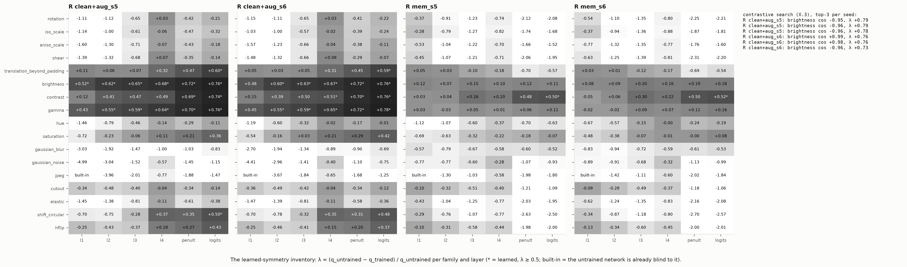
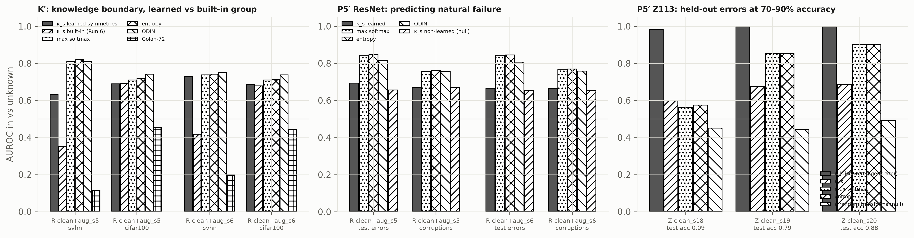
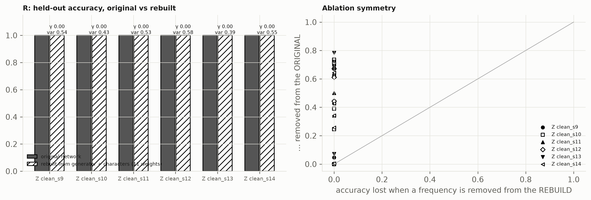

One idea, earned by six runs: a learned symmetry is one the trained network keeps and the untrained network does not. Architecture is the null. Run 7 built the extractor that subtracts it — λ = (quntrained − qtrained) / quntrained over seventeen transformation families and a Lie-algebra search — and asked whether the symmetries it finds on a CNN do what the discovered generator did on the transformer: mark what the network does not know and where it fails. Then it rebuilt the transformer from its group alone and stopped.
The extractor works and says something specific. An augmented ResNet-18 has exactly three learned symmetries — brightness, contrast, gamma — none of which was augmented, on both seeds; memorisers have none and are two to three times more fragile than an untrained net to rotation, scale and shear; a gradient search over a ten-dimensional Lie algebra, told nothing, converges to brightness. Training makes the network more sensitive to noise, blur and JPEG. The one rule that failed is "built-in = quntrained < 0.05": the untrained transformer is blind to swap and the untrained CNN is not blind to a shift, so the threshold is right on one architecture and wrong on the other.
Learned symmetries lift the CNN's knowledge boundary where the unknown set breaks them and nowhere else. SVHN from below chance to 0.63 and 0.73; Gaussian noise to 0.95; CIFAR-100 unchanged. On the transformer, natural failure is orbit incoherence: on grokking-in-progress models the held-out errors are exactly the incoherent inputs (AUROC 1.000 against softmax's 0.85–0.90). On the CNN three photometric invariances do not predict a semantic error. The generator and five characters rebuild the transformer at 100% with eleven fitted weights, and the ablation asymmetry says the network's own circuit is a different implementation of the same specification.
| Run-7 cell | Pre-registered | Measured | Verdict |
|---|---|---|---|
| X.4 (i) learned families | ≥ 3 at the penultimate layer, both clean ResNets | brightness 0.72, contrast 0.69–0.70, gamma 0.70–0.72 — exactly three each | PASS |
| X.4 (ii) built-in exclusion | shift, flip quntr < 0.05 | 0.17–0.30; they read as partially learned (λ 0.35, 0.27) — augmentation | FAIL |
| X.4 (iii) contrastive search | |cos| ≥ 0.8 to a learned family, 2/2 | brightness, |cos| 0.95–0.99, λ 0.76–0.79 | PASS |
| X.4 (iv) memorisers | < 2 learned | 0, 0, 0 | PASS |
| X.4 (v) Z113 consistency | orbit translation λ < 0.2; swap ≥ 0.5 clean, < 0.2 mem | orbit translation ✓ 6/6; swap 0.40–0.73 (built-in by the rule: quntr 0.01–0.03); memorisers −50 to −76 | FAIL |
| K′.2 knowledge boundary | learned ≥ built-in + 0.20 on SVHN and CIFAR-100; untrained null < 0.9 | SVHN +0.28 / +0.31 ✓; CIFAR-100 ±0.01 ✗; untrained 0.997 ✗ (cosine artefact) | FAIL |
| P5′ Z113 natural failure | AUROC(κ) > max-softmax, 3/3 | 0.983 / 1.000 / 1.000 vs 0.563 / 0.852 / 0.900; random-transformation null 0.44–0.49 | PASS |
| P5′ ResNet natural failure | κslearned > max-softmax on test errors or corruptions, 2/2 | 0.69 / 0.67 vs 0.84; 0.67 / 0.66 vs 0.76; beats the non-learned null 4/4 | FAIL |
| R reconstruction | rebuilt ≥ 0.98; ablation symmetry ≥ 4/5; γ < 0.2 | 1.000 ×6 · 1, 1, 1, 1, 1, 0 of 5 · γ = 0.00 (logit variance explained 0.39–0.58) | PASS · FAIL · PASS |
| P7 persistence ≥ 0.85 | 3/3 | 0.871 / 1.000 / 0.970 | PASS |

Invariance depth: brightness is learned by layer1–2, gamma by layer2, contrast only at layer4–penultimate; translation beyond the padding and circular shift become learned only at the logits. Hue, saturation, cutout and elastic warps are not learned. Geometric families read λ −0.3 to −0.5 on clean nets and −1.7 to −2.3 on memorisers: nobody learned them, and memorising makes a network fragile to them. This is P1 on a CNN — and it is a different answer from "shifts and flips".

The learned group sees SVHN and noise because they violate photometric invariances learned on natural images; it does not see CIFAR-100 because a CIFAR-100 image satisfies them. Orbit coherence marks inputs on which the learned rule breaks, not inputs that are semantically new. The untrained null fails for the same reason it failed in Run 6: a cosine between an untrained network's near-constant logits is ≈ 1 under any transformation, while the extractor's random-pair-normalised q is not — the right next instrument is a κ built from that q, and it is deferred, not claimed.

======================================================================================================================== open(ResNet-18, CIFAR-10, clean + augmentation, seed 5) — r6_resnet_cleanaug_s5 P1 what it learned [registered] learned symmetries (architecture subtracted, λ ≥ 0.5 at the penultimate layer): ['brightness', 'contrast', 'gamma']; λ = brightness +0.72, contrast +0.69, gamma +0.70; contrastive search recovers brightness (|cos| 0.95); partially learned by augmentation: shift +0.35, flip +0.27; made MORE sensitive: noise -1.45, blur -1.03, jpeg -1.88 P2 why this decision [registered] orbit coherence under the learned group on CIFAR-10 test: κ_s mean 0.978 (untrained network 0.997); on its own training set κ median 1.00 vs memorisers 0.23 P3 spurious structure [ carried ] functional floor + dominance rule are Z113 instruments (Run 4); on the CNN: shift consistency 0.989 (train recipe), no slot structure to read P4 what it does not know [ FAIL ] κ_s over learned symmetries, AUROC: SVHN 0.631 (built-in group 0.351, max-softmax 0.809); CIFAR-100 0.689 (0.692, 0.710); lowest-κ images misclassified 75% P5 where it will fail [ FAIL ] natural failure: test errors AUROC κ_s 0.693 vs msp 0.844 (non-learned null 0.657); 25 corruption cells pooled κ_s 0.670 vs msp 0.758 P6 understands? [registered] shift consistency 0.989 (memorisers 0.17–0.19); learned-symmetry count 3 (memorisers 0); depth slope: no difference once the label-blind null is removed (transformer-only instrument) P7 how it formed [not measured] formation sweeps exist for Z113 only; the CNN has no discrete group to watch appear ======================================================================================================================== open(Z113 transformer, clean, seed 12) — r6_z113_clean_s12 P1 what it learned [registered] the cyclic group generated by translation by 1 (full 113-cycle from outputs alone); characters at [38, 45, 5, 11, 22]; swap is built-in (untrained q 0.03) and kept; the symmetric translation (a+u, b−u) is a learned invariance (λ_post +0.74), the orbit translation is a symmetry, not an invariance (λ −0.40) P2 why this decision [registered] orbit coherence κ = 1.000 on held-out inputs (memorisers 0.000); rebuilt from generator + characters with 11 weights: 1.0000 held-out accuracy P3 spurious structure [registered] slot shares (a, b, hint) = (0.489, 0.496, 0.015); dominance flag none; functional interrupt (Run 4) 5/5 P4 what it does not know [ partial ] OOV token: κ AUROC 0.994 (max-softmax 0.793); pairs from a smaller modulus are valid inputs and are not detected (0.50) P5 where it will fail [ PASS ] natural failure on an early-stopped sibling (seed 20, test acc 0.88): AUROC κ 1.000 vs max-softmax 0.900; adversarial radius (Runs 1–6): nothing beats the margin P6 understands? [registered] slot collapse yes; q(swap) 0.005; null-subtracted depth slope -0.411; generator yes → UNDERSTANDS 4/4 (memorisers 0/4) P7 how it formed [registered] generator first accepted at checkpoint 19 (test acc 0.23), largest jump at 23, lead +4; persistence 0.871 (≥ 0.85)
Seven runs, on about fifty fresh models trained after their criteria were written, scored by the letter with a null on every positive. A network's knowledge is a group. On a transformer that group is discoverable from its outputs, its characters are the learned features, its orbits explain every decision, it arrives with the accuracy jump and never on a memoriser, it rebuilds the function, and the inputs on which it stops acting coherently are the inputs the network gets wrong and the tokens it has never seen. On a CNN the group is what training taught the network to ignore — brightness, contrast, gamma — found by subtracting the untrained network; it separates a memoriser from a generaliser and marks the unknown inputs that violate it, and no more. Nothing derived from the representation predicts adversarial failure better than the softmax margin, on either architecture, in six attempts. The definition of understanding — collapse onto the task, preserved symmetry, a recoverable group — is registered on the transformer and has two instruments on the CNN. That is what it is.
| What | Where (under ~/blindinglight) |
|---|---|
| Pre-registration, brief | SPEC7.md, docs/RUN7_BRIEF.md, RUNLOG7.md |
| Findings and the final claims map | FINDINGS7_X.md, FINDINGS7_K.md, FINDINGS7_P5.md, FINDINGS7_R.md, FINDINGS7_P7.md, CLAIMS.md (every claim → run, evidence, null, baseline, status) |
| Results | results/run7/ (X, X_z113, K, P5_resnet, P5_z113, R, score) |
| Code | whiteboxtopo/extractor.py (17 families, λ, Lie-algebra search), analysis/run7_{resnet,z113,score}.py, fig_run7.py, make_grid_run7.py, demo_run7.py; 213 tests pass, 1 xfail |
| Demo | logs/demo_run7_transcript.txt |